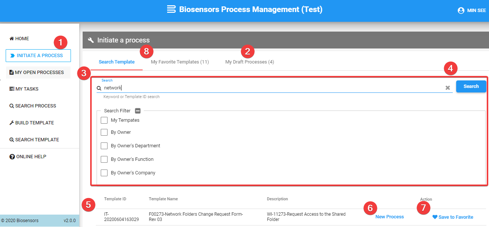
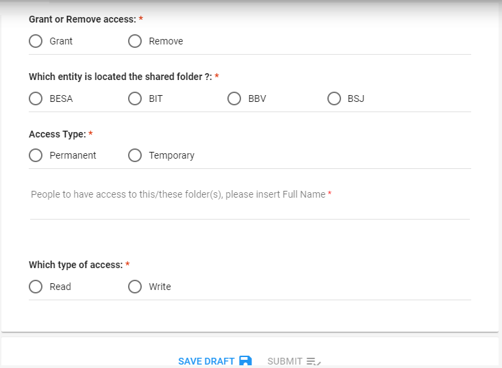
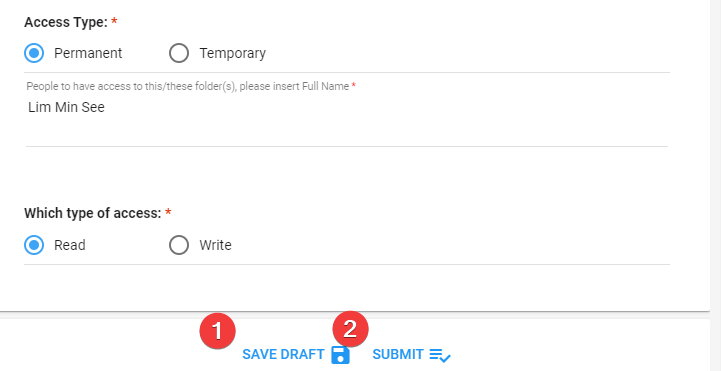
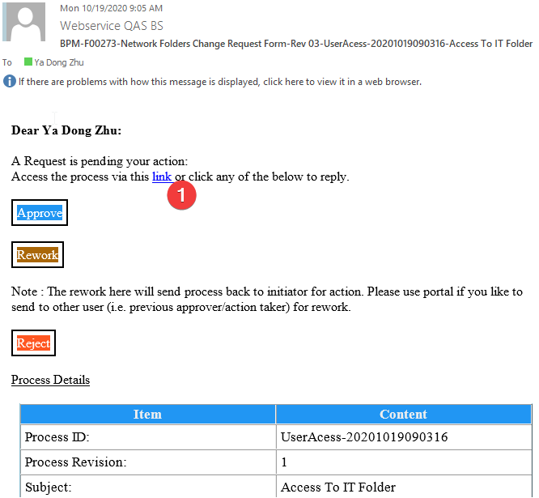
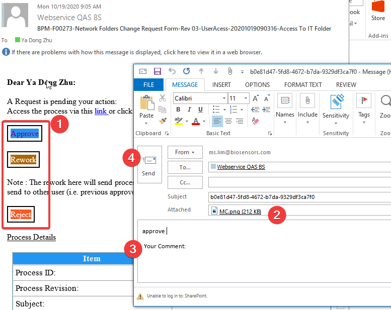

Overview
The initiate process function allows you to look for any released template , and use it to initiate new process.
Initiate process

- Click on "INITIATE A PROCESS" menu link.
- Click on "My Draft Processes" if you have any draft process yet to submit. Otherwise, proceed to step 3 to search for template.
- Click on "Search Template" tab and enter your search criteria.
- Click on "Search" button
- Search result shows list of available templates based on search criteria
- To initiate process, click on the "New Process" button on the record
- Continue by referring to Next Section - Enter process details
- For frequently used template, you may save it by clicking on the "Save To Favorite" button.
- To access the saved template, click on the "My Favorite Templates" Tab.
Enter process details

- In the process detail page, enter "Subject"
- This will be the email subject for email notification triggered to approver / action taker / acknowledger
- Enter "On-behalf of" (optional)
- Enter only if process is raised on behalf of another user. Else , leave it as blank
- Depend on template setting, process might get routed to on-behalf user first for confirmation before proceed further for approval/action
- For process that requires initiator's functional reporting for action (e.g. reporting manager, functional head and etc.), it will be routed to on-behalf user reporting instead of reporting of user who submitted this process.
- Enter process "Start on" date
- This serves as a schedule feature where process will kick start only on the specified date.
- Depend on template setting, field might be disabled for usage.
- Enter initiator input form.
- Input form will be rendered accordingly based on the template configuration.
- "SUBMIT" button will be enabled only if all the mandatory fields are provided.
- Attachment upload function will be available once process is saved as draft.
- Review person responsible for the process (e.g. approver / action Taker / acknowledger) - see next section.
Review person responsible for the process.
- Review by click on each of generated tabs.
- This section will be auto-generated based on the template configuration and also info provided in form.
- Do feedback to template owner if you found that the person responsible is incorrect
- Review who is the person in charge of each of the process
- There might be a case where you need to input the responsible person yourself :
- when template is configured in such way where the initiator has to select who is the approver/action taker/acknowledger.
- when there are multiple users found for the predefined role in template.
- For the above cases, the person responsible needs to be selected before the initiator is allowed to submit the process. Else, "SUBMIT" button will be disabled and tab will be shown in amber color for attention.
- You could also customize the frequency of reminder by clicking on the "Bell" icon at the tab.
Submit process

- Click on "SAVE DRAFT" button to save process as draft for later submission.
- Click on "SUBMIT" button to submit process.
- "SUBMIT" button will be enabled only if all the mandatory info is provided.
- Upon submission, an email reminder will be triggered to person who requires to take action.
Act on process (via portal).

- From the received email, the approver/action taker can click on the link in email to open the task in BPM.
- Alternatively, user can access the pending tasks via "My Tasks" menu in BPM.
- Upload attachment(if any)
- Enter comment (mandatory for rework or reject action).
- There might be other customize field(s) for input depends on template configuration.
- Click to perform action.
- For approval, user can perform :
- Approve - Upon approve, the process will proceed to next step.
- Reject - Upon reject, the process will end immidiately with status of "rejected", and the initiator will be notified via email.
- Rework - Upon rework, selected routing person will be notified via email and the process will be routed back to him/her for action.
- For action taker, user can perform :
- complete - Upon complete, the process will continue to next step.
- Rework - Upon rework, selected routing person will be notified and the process will be routed back to him/her for action.
Act on process (via email).

- From the received email, the approver/action taker can click on available action links in email.
- Email action might not be available for certain process. This is subject to configuration in template. The typical case is that the approver/action taker is required to provide additional information.
- Upload attachment (if any).
- Enter comment (mandatory for reject and rework action).
- Click on "Send" button.
- Once processed by BPM, a notification email will be triggered to user to inform email action processing status. (i.e. success or fail)